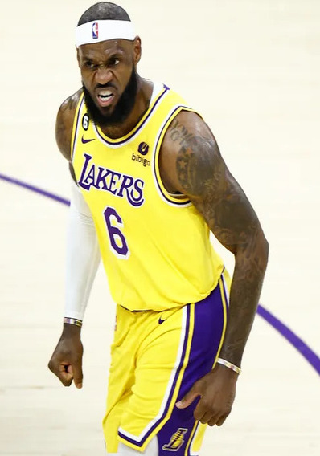

LeBron Raymone James
|  |
LeBron Raymone James, nascido em 30 de dezembro de 1984, é um dos maiores jogadores de basquete da atualidade. Ele é um ala e atualmente joga pelo Los Angeles Lakers na NBA. LeBron é conhecido por suas incríveis habilidades, incluindo pontuação, passes e habilidades defensivas. Ele conquistou vários títulos da NBA, incluindo campeonatos com o Miami Heat e o Cleveland Cavaliers. Fora das quadras, LeBron é uma figura influente, envolvida em várias causas sociais e de caridade. Ele é considerado um dos atletas mais influentes do mundo e é conhecido por seu ativismo e empreendimentos comerciais bem-sucedidos, incluindo sua linha de tênis LeBron em colaboração com a Nike. LeBron James é amplamente respeitado no mundo do esporte e da cultura pop. Além de suas conquistas esportivas, LeBron James é conhecido por seu impacto na comunidade e seu ativismo social. Ele tem sido um defensor de várias questões, incluindo educação, igualdade racial e justiça social. Sua Fundação LeBron James, por exemplo, tem apoiado programas educacionais e concedido bolsas de estudo para jovens em situações de risco. LeBron também foi um dos líderes do movimento de atletas que usaram suas plataformas para falar sobre questões sociais, incluindo protestos contra a brutalidade policial. Em termos de suas realizações na NBA, LeBron é conhecido por seu versatilidade em quadra. Ele é um dos jogadores mais completos da história, capaz de pontuar, fazer assistências e pegar rebotes. Ele já conquistou múltiplos prêmios de Jogador Mais Valioso da NBA e é frequentemente comparado a outras lendas do basquete, como Michael Jordan e Magic Johnson. LeBron James continua a ser uma figura dominante no basquete contemporâneo e um modelo para muitos jovens atletas em todo o mundo. Sua carreira, tanto dentro como fora das quadras, o estabelece como um dos ícones mais influentes do esporte e da cultura popular atual. |